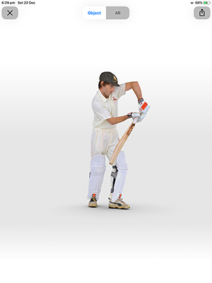
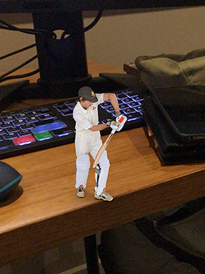
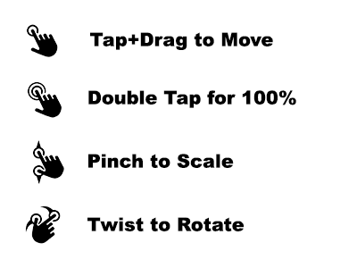

Welcome to my AR Library website. I created this website in order to view AR objects from the web on an iPhone 7 or iPad gen.5 or higher device running iOS 12.
No App Required!
Tap an image in the menu below and it will launch "Quick View".
This is what Object View Looks like;

If you select AR, then it will launch your camera and the model will appear in your scene. Follow the screen prompts to create a floor plane which will anchor the model.

You can use finger gestures to manipulate the model.

Even though you can forward on these models to other people, I prefer you did not for now.
These models are small for table top use but can be lifesize.